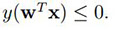
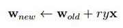

Dasha Pruss
Perceptron implementation Back to Projects
First, I implemented a regular perceptron. I perform an update on an example (x, y) (note: bold-face denotes vectors) if This is the equivalent of checking if the sign of the true label is the same as the predicted label; if they are different signs (positive and negative), their product is always negative. When the prediction is incorrect, we update the weight vector:

Note that the data set includes a bias term, so the bias term does not need to be explicitly mentioned above. Here, w is a weight vector that I initialize to random values between 0 and 1 and r is a hyper-parameter that can be found using cross-validation on the data.
Margin Perceptron
This uses the same implementation as Perceptron; the only difference is that it checks if the product of the actual label and predicted label is less than or equal to the margin, rather than 0, so we update if , where μ is another hyper-parameter that is found through cross-validation.
Source code and a description of my dataset can be found here.